The approach
Concept in one line: every week, a 40-second "radar ping": one band the viewer has never heard of, one reason to press play, and a clear way to listen to more.
Audience promise
"In 40 seconds you'll know whether this band is for you, and you'll have heard their best moment."
Why it can work
Music discovery is a daily habit, "if you like X" is already how people search, and text-only videos are cheap, quick and sound-first.
Why it's hard
Unknown bands have no search demand, so the hook, the comparison to a known band and the recurring format must do the work. Music rights are the main risk (section 08).
Series formats (same template, different shape)
| Format | Length | Cadence | What it is |
|---|---|---|---|
| Radar Pick | 38–45 s | Weekly (flagship) | One band, the standard script of section 03. |
| Double Blip | 30–35 s | Optional 2nd weekly slot | Two similar bands side by side ("If you like A, try B or C"). |
| Genre Sweep | 50–60 s | Every 2–3 weeks | Three bands from one genre or country, 15 s each. |
| Rewind | 55–60 s | Monthly | Recap of the month's best bands. Only reuse material that is already cleared. |
Production workflow (one master video, two platforms)
- Select and research (20 min): pick the band, verify every fact you will put on screen, fill in Video_Template/Episode_Sheet.csv.
- Clear the rights first (async): send the permission email (Permission_Request_EN.txt) to the band or label. Do not edit until you have a written yes.
- Assemble from the CapCut template (45–60 min): swap text, photo and audio; pick the accent colour for the genre.
- Export once (clean 1080×1920 MP4, no CapCut outro, no watermark).
- Upload natively to both platforms from the same file, with a different caption and hashtags for each. Never re-upload a video downloaded from the other platform (watermarks hurt reach).
- Pin a comment with links to the band (Bandcamp / Spotify / official site) and credit the photo and music.
- Review after 48 h: retention, swipe-away rate, shares, saves, follows.
Cadence and when to scale up
Start with 2 videos per week for 4 weeks to learn what works, then settle on a sustainable rhythm. Scale only if the numbers justify it. These are working heuristics, not platform rules:
Stayed to watch
in YouTube Analytics ("viewed vs swiped away")
Avg. view duration
of video length (looping helps)
Shares + saves
of views. Discovery content lives on shares.
Follows
per 1,000 views, trending up
If three consecutive videos beat these, move to 3 per week. If you are below them after 8 videos, change the hook and the first 2 seconds before changing anything else.
Captions and discovery (text is not baked into the video)
YouTube Shorts
- Title (≤ 60 chars): "[BAND]: if you like [A]". Keywords first.
- Description: 2 lines on the band, links, photo and music credits, then 3 hashtags.
- Link the band in the pinned comment.
- Add the Shorts to a playlist "Off The Radar" for binge-watching.
Instagram Reels
- First line of the caption works as the hook: "If you like [A], you need [BAND]".
- Invite the band as collaborator (Collab post) so the video also appears to their audience.
- 3–5 relevant hashtags (genre, "newmusic", series tag).
- Add alt text and a cover that survives the 3:4 grid crop (section 07).
30-day launch plan
| Week | Goal | Actions |
|---|---|---|
| 0 | Set-up | Choose name and check handles, build the CapCut master from the template, write 8 permission emails, create Episode Sheet. |
| 1 | Batch | Produce 4 episodes in one sitting from bands that said yes. Keep a buffer of two. |
| 2–3 | Publish & test | 2 per week. Test two hook styles (section 03) and two thumbnails (section 07). |
| 4 | Decide | Keep the best hook and format, set the cadence, tell the bands you featured, ask them to share. |
Series name proposals
Criteria: short enough for a handle, says "discovery" at a glance, works spoken and written, and fits the radar/zine visual identity. Before choosing: search the name on YouTube, Instagram, TikTok and a domain registrar, and run a trademark search in your country. Most of these are likely used somewhere, so check the exact handle and the music-niche conflicts.
| # | Name | Tagline | Why it works | Watch out |
|---|---|---|---|---|
| 1 ★ | Off The Radar | One band you've never heard. | Says discovery instantly; the radar visual language comes free. Works as a recurring "ping". | Common phrase: expect crowded search, use a distinctive handle (e.g. @offtheradar.bands). |
| 2 | Unsung | Bands worth your next listen. | Short, elegant, evergreen. | Generic; many existing uses. |
| 3 | B-Side Club | The bands behind the hits. | Nostalgic, community feel, good for merch later. | "B-side" suggests older records; set expectations about new bands. |
| 4 | The Underplayed | Too good to be this quiet. | Clear promise; "underplayed" is distinctive. | Longer handle. |
| 5 | Blip | A new signal every week. | Ultra-short, ownable, matches the logo mark. | Hard to search; needs a strong tagline in the bio. |
| 6 | Haystack | We found the needle. | Strong metaphor for curation. | Unrelated to music out of context; add "bands" to handle. |
| 7 | Low Orbit | Just below your radar. | Distinctive and memorable, space/radar tone. | Not obviously music. |
| 8 | Hidden Track | Press play on what you missed. | Music-native phrase, a little "secret" feeling. | Also means a specific thing on albums. |
| 9 | Never Heard Of 'Em | Yet. | Conversational, matches the hook line "you've never heard of them". | Long; fine as a title, harder as a handle. |
| 10 | Signal / Noise | Cut through the playlist noise. | Editorial, curator voice. | Many existing uses, including tech content. |
Standard series script
Because there is no voice-over, the script is a beat sheet of on-screen text synchronised with the music. The structure never changes (so viewers recognise the series); the wording, order of some beats, accent colour and treatment change (so videos don't look like clones).
The 40-second master structure
| Beat | Time | Goal | On-screen text pattern | Visual |
|---|---|---|---|---|
| 0 · Hook | 0.0–2.5 | Stop the scroll, create curiosity. | 1 statement, max 7 words, 3 short lines, big (150–176 px). One word in lime. | Band photo/footage under accent tint, brackets + header appear. Start music on an energetic bar, not the intro. |
| 1 · ID | 2.5–6.0 | Who is it. | [BAND NAME] (150 px) + mono line: city, country · genre · year. | Photo on top, band-name plate, tape label if useful. |
| 2 · Sounds like | 6.0–13.0 | Place them in the viewer's mental map. | "Sounds like" + [BAND A] + [BAND B] and one sharp line about the sound. | Fact card plate; cut on the beat between the two names. |
| 3 · Why they matter | 13.0–21.0 | Two verifiable facts: milestone, scene, instrument, story. | 2 cards × 4 s, ≤ 7 words each. Never lyrics. | Card layout with a different photo/texture for each. |
| 4 · Start with | 21.0–31.0 | The payoff: let the music breathe. | "Start with →" + [TRACK TITLE]. Almost no other text. | Music peak (chorus/drop). EQ bars, slow zoom on photo, grid background. |
| 5 · Radar score | 31.0–36.0 | Verdict that invites debate. | "Radar score 4/5 blips" + 1-line verdict. | Radar icon, 4 filled blips. Optional: tiny "disagree? tell me" prompt. |
| 6 · CTA | 36.0–40.0 | Follow + where to listen + loop. | "Next week: another band you don't know" · "Follow" · "Full tracks: Bandcamp / Spotify". | End card plate. Final 0.3 s cuts back to hook frame to encourage loop. |
Storyboard (using the template layers)
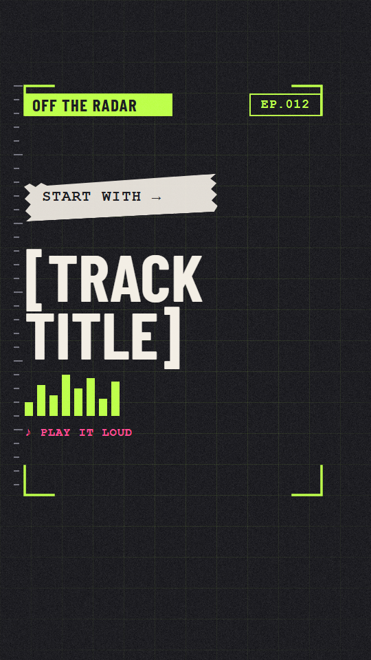
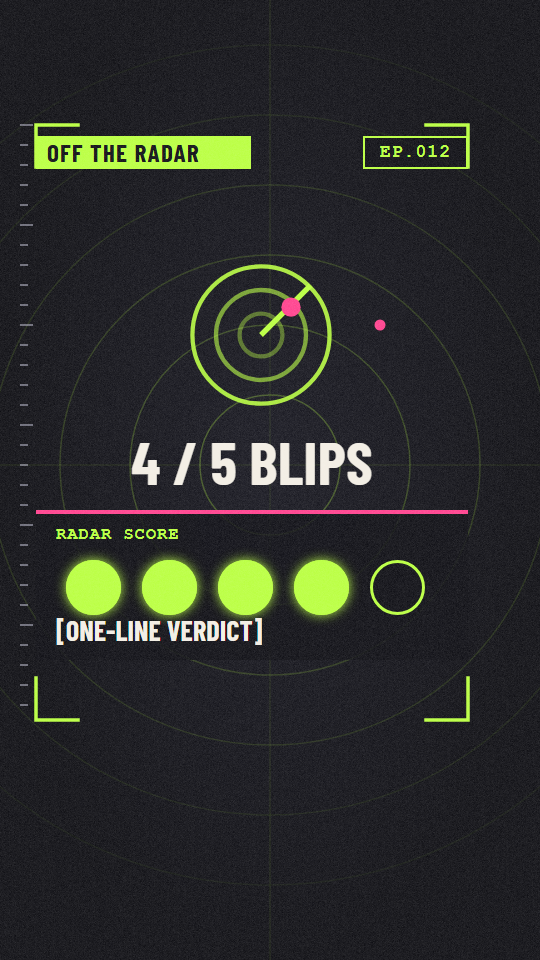
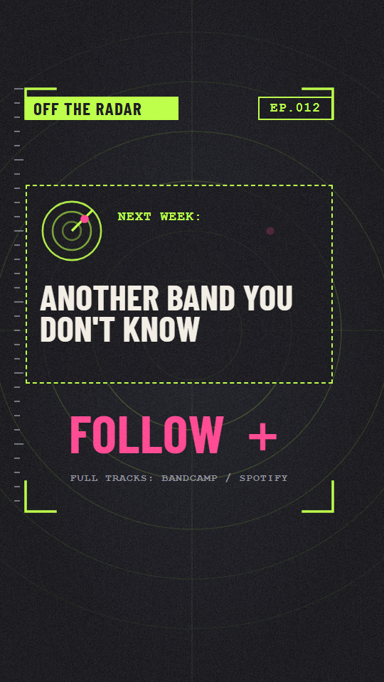
Writing rules for on-screen text
- Maximum 7 words per screen, 3 lines.
- Reading speed: about 3 words per second; no text under 1.2 s.
- Change something on screen every 1.5–3 s (text, crop, zoom, plate).
- Cut on the beat: at 120 BPM a bar is 2 s, a beat 0.5 s.
- Only verifiable facts; keep sources in the Episode Sheet.
- Never put song lyrics on screen (separate copyright).
- Describe sound with "sounds like", not "copy of".
- Same words in lime for the key idea, magenta only for asides.
- Don't over-promise ("best band ever"). Opinion goes in the Radar score.
- Keep everything inside the safe zone (section 04).
Variation bank
Rule: change at least 3 of these 5 dimensions between consecutive videos: (1) hook style, (2) structural variant, (3) accent colour/genre, (4) background and photo treatment, (5) transition set and CTA line.
1 · Hook styles (beat 0)
- Classic: "You've probably never heard of [BAND]. Let's fix that."
- Playlist: "Your playlist is missing [BAND]."
- Comparison: "If you like [A], you need [BAND]."
- Genre-country: "[GENRE] from [COUNTRY]. You're welcome."
- Cross: "[A] fell in love with [B]. This is the result."
- Stat (verify!): "[N] monthly listeners. They deserve [N×10]."
- Story: "[YEAR]: one EP. Nobody noticed. Until now."
- Challenge: "Press play. Try not to replay it."
- Direct: "Meet your next obsession."
- Insider: "Nobody told you about [BAND]. So we will."
2 · Structural variants (same visual system)
| Variant | Length | Changes vs. master |
|---|---|---|
| A · Classic Radar Pick | 40 s | The master structure. |
| B · If you like | 35 s | Hook is the comparison; beat 2 shortened; the track gets 14 s. |
| C · Three reasons | 45 s | Beat 3 becomes three numbered cards (1, 2, 3) of 4 s each. |
| D · Timeline | 45 s | Beat 3 becomes a horizontal timeline: formed → first release → now. |
| E · Double Blip | 35 s | Split screen band A vs. B, "Which one first?" prompt. Needs clearance for both. |
| F · Guess the genre | 35 s | Hook is a question; genre is revealed at beat 2. Boosts comments. |
3 · Sound descriptions (beat 2 one-liners)
- "Fast, melodic and a bit sad."
- "Warm guitars, cold synths."
- "Folk that grew teeth."
- "Punk with a pop conscience."
- "Slow-burn, then a wall of sound."
- "Heavy riffs, tender choruses."
- "Dance floor at 3 a.m."
- "Road-trip music for rainy days."
4 · Verdict lines (beat 5)
- "Play it twice."
- "Fans of [A], you're welcome."
- "Underrated isn't the word."
- "Save for later. Trust me."
- "Debut? Hard to believe."
- "Not for everyone. Maybe for you."
5 · CTA lines (beat 6)
- "New band every [DAY]. Follow."
- "Save this for your next playlist."
- "Send it to the friend with the best taste."
- "Which band should I feature next? Comment."
- "Support them: link in comments."
- "Next week: [GENRE] from [COUNTRY]."
6 · Visual variations
- Accent by genre: lime (default / rock-indie), magenta (punk/pop), cyan (electronic), amber (folk/acoustic), red (metal/hardcore), violet (jazz/soul/hip-hop). Always keep lime brackets and header.
- Background: Void Rings (default), Void Grid (technical, track beat), Bone Paper (light "zine" variant for acoustic/folk).
- Photo treatment: duotone tint · halftone cut-out with tape · full-bleed with dark gradient · stills with slow Ken Burns.
- Transitions pack: (a) radar sweep wipe, (b) 3-frame glitch slice, (c) zoom punch 108 %, (d) flash cut on the beat. Use one pair per video.
Visual style guide
Concept: "Radar × Zine". A surveillance-interface (brackets, rings, blips, mono labels) crossed with a photocopied fanzine (tape, halftone, grain, torn paper). It reads as "we detect what the algorithm misses" and it is cheap to produce because most elements are flat shapes.
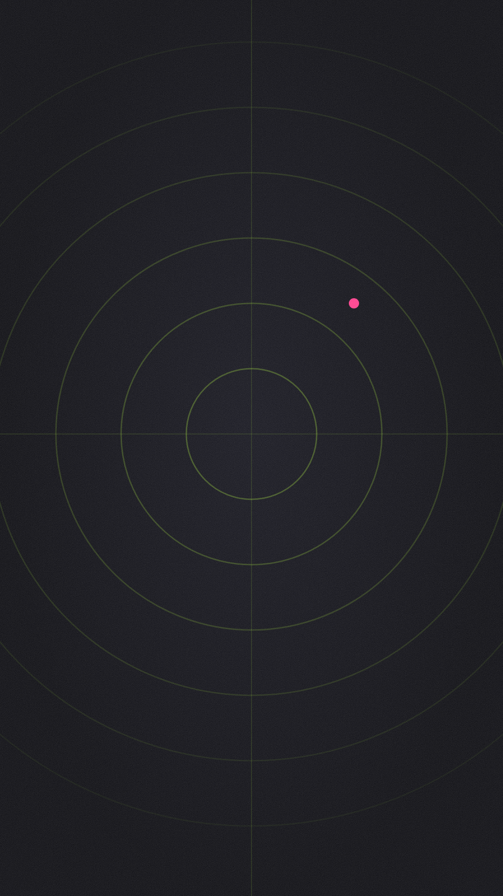
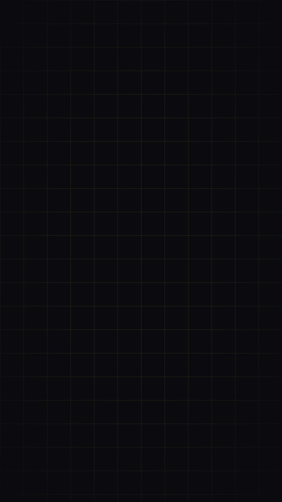
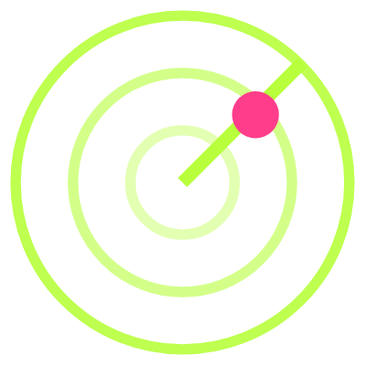
Colour palette
Genre accents (swap in place of magenta/lime on photo tints and highlights)
Typography
Display · Barlow Condensed Bold
All-caps, tight leading (0.88). Titles, hooks, band names. Free, SIL Open Font License (Google Fonts), commercial use allowed. If you can't install it, CapCut alternatives: Bebas Neue, Oswald or Anton (check the licence of any font you use).
Labels · Courier Prime Bold
All-caps, tracking +6 %. Metadata, labels, episode counter, "start with". Typewriter feel = zine. Free (OFL). Fallback: Courier New Bold.
| Use | Font | Size (1080×1920 px) | Colour |
|---|---|---|---|
| Hook | Barlow Condensed Bold | 150–176 | Bone, key word Lime |
| Band name | Barlow Condensed Bold | 150–220 (shrink for long names, max 2 lines) | Bone |
| Fact / track title | Barlow Condensed Bold | 100–190 | Bone / Lime |
| Verdict, CTA | Barlow Condensed Bold | 56–100 | Bone / Magenta |
| Labels / metadata | Courier Prime Bold | 30–44 (never below 30) | Lime / Gray / Magenta |
CapCut's size slider does not map 1:1 to pixels; compare with Template_Preview.png and match the look.
Safe zones
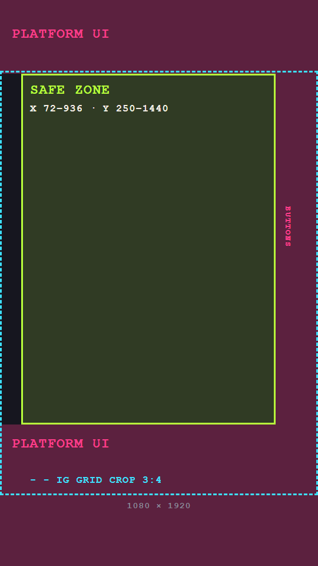
Both platforms cover the edges with interface. Keep every important element inside x 72–936, y 250–1440 (the lime brackets in the template mark exactly this area).
- Top 250 px profile, search, camera and title bars.
- Bottom 480 px caption, music, account, progress bar.
- Right 144 px like / comment / share / remix buttons.
- Instagram grid shows the centre 3:4 crop (1080×1440, dashed line) of the cover. Key cover elements go inside it.
UI layouts change; test with a private upload on both apps once per quarter.
Video elements library
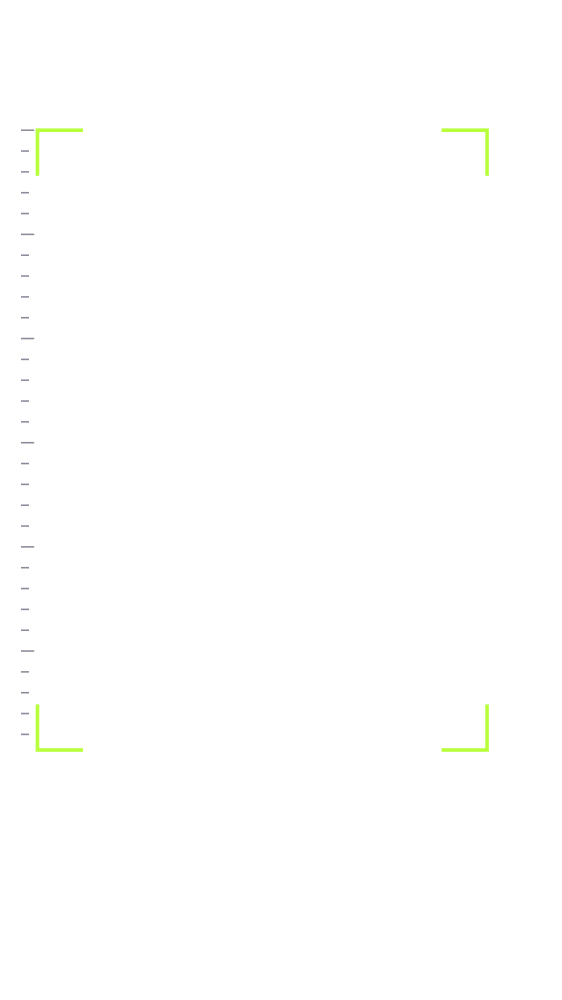
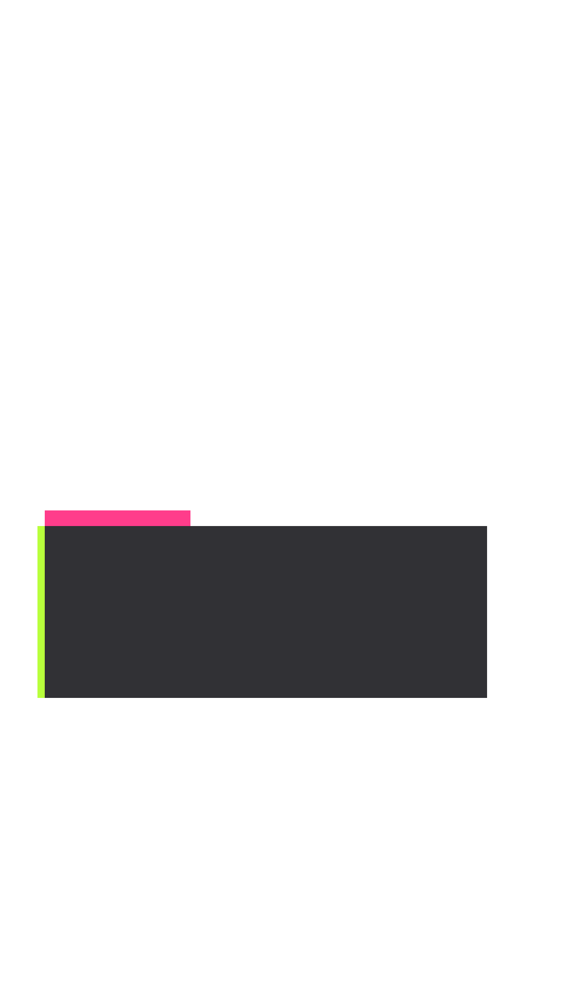
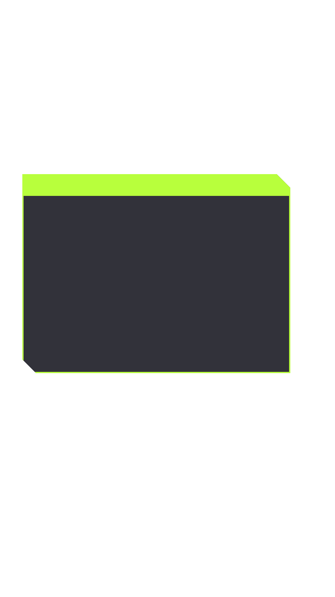
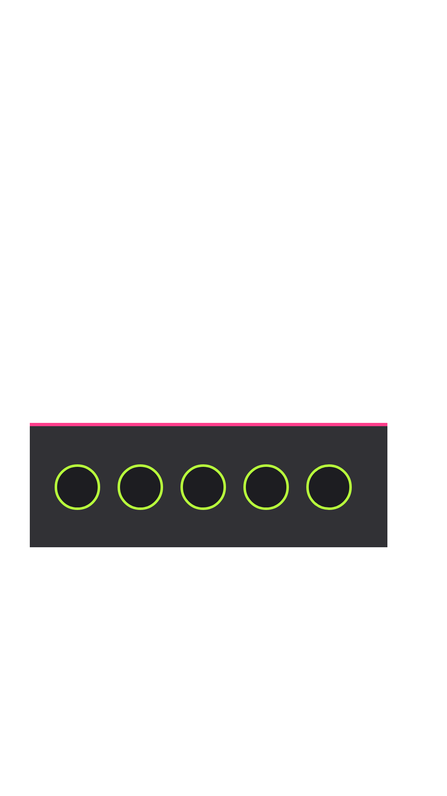
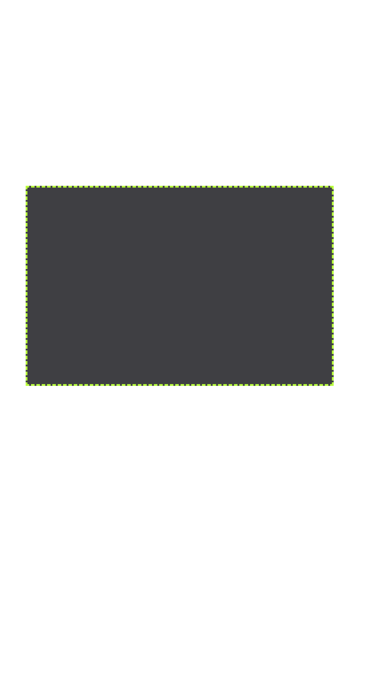
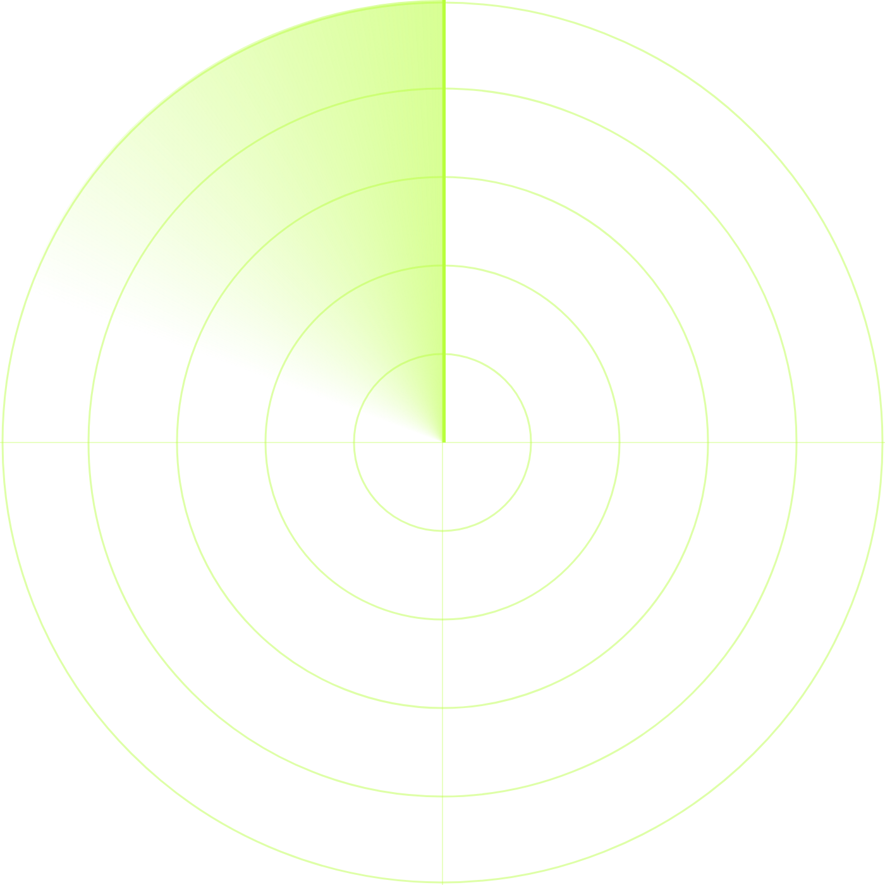
Motion & editing language
Do
- Hard cuts on the beat; text pops in 0.2–0.3 s (pop / slide-up), no slow fades.
- Slow push-in on photos: 100 % → 108 % over the shot.
- Radar sweep wipe between major beats (max 2 per video).
- Keep scanlines (30 %), grain (40–50 %) and vignette (50–60 %) on the whole video: it is the "glue" of the series.
- Duotone photos: black & white + Solid tint (Multiply / Overlay, 60–80 %).
- A blip (magenta dot) appears in each video, always in a different place: a recognisable easter egg.
Don't
- More than 2 fonts, or more than 2 accent colours in one scene.
- Text over busy areas without a plate or gradient.
- Stock "viral" effects, emoji stickers or trend filters: they date the series.
- Flashing effects faster than 3 per second (photosensitivity).
- Lyrics, logos of streaming platforms or other creators' watermarks in the frame.
- Screenshots of Spotify/Bandcamp pages or album covers without permission.
Video technical specifications
Export checklist
- Resolution 1080p, 30 fps, MP4 / H.264
- Bitrate Recommended or Higher
- Audio export on, AAC
- No CapCut outro or watermark
- Peaks under −1 dB, no clipping
- Watched on phone at full-screen with the platform UI simulated
- First frame doubles as cover
- Rights logged in the Episode Sheet
Upload notes
- YouTube: a vertical video up to the current Shorts length limit is treated as a Short. Upload from the Studio app or desktop; set title, description, audience ("not made for kids") and playlist. Custom Short thumbnails may be limited to the mobile app: verify in your account.
- Instagram: upload natively as a Reel from the app or Meta Business Suite. A Business account has a restricted commercial music library; for your own cleared audio this does not matter, but trending in-app audio is not available on files uploaded with your own music track baked in.
- Don't upload the same file twice on the same platform. Do vary the title/caption per platform.
CapCut template
Folder contents
Track stack (bottom → top)
| Track | Content | Notes |
|---|---|---|
| V1 | Background (BG_*) or band footage/photo | Photos: slow zoom 100→108 %. |
| V2 | Solid tint (Solid_*) | Blend Multiply/Overlay, opacity 60–80 %, only over photos. |
| V3 | Plates L03 / L04 / L05 / L12 | One per beat, aligned automatically (full-frame layers). |
| V4 | L01 Brackets + L02 Header (whole video) | Never moves; this is the series signature. |
| V5 | L06 Scanlines (30 %), L07 Grain (45 %), L08 Vignette (55 %) | Whole video, above everything except text. |
| T1–T4 | Text per Text_Presets | Header text, main text, labels, details. |
| A1 | Music (cleared) | −14 LUFS target. Fade out last 0.5 s. |
| A2 | SFX (optional) | Only royalty-free / licensed SFX. |
Build the master in 10 steps
- New project → ratio 9:16, 1080p, 30 fps. Import the whole Video_Template folder.
- Drop BG_Void_Rings on V1 for 40 s.
- Drop L01 + L02 on V4 for 40 s. Drop L06/L07/L08 on V5 for 40 s with the opacities above. They are full-frame, so no positioning is needed.
- Add plates on V3 following the blueprint (L03 at 2.5–6 s, L04 at 6–21 s, L05 at 31–36 s, L12 at 36–40 s).
- Create the text clips from Text_Presets_EN.csv (font, size, colour, wording). Match positions against Template_Preview.png.
- Add a pop-in (0.25 s) to each text and a quick radar-sweep wipe (or L09 rotated with keyframes) at 13 s and 31 s.
- Optional top progress bar: L10 Track under the header, L10 Fill with keyframes scale-X 0 → 100 % over 40 s.
- Add the placeholder photo on V1/V2 for beats 0–1, with tint.
- Add a placeholder music clip and align the cuts to its beat markers.
- Rename the project OTR_MASTER. For each episode, duplicate the draft, rename (OTR_E012…), replace text/photo/music, export.
If your CapCut version offers "Export as template" / "Create template", use it on OTR_MASTER (availability depends on version and region). Otherwise, the duplicated master is your template.
Thumbnail style
In vertical feeds the "thumbnail" appears in three places: the YouTube Shorts shelf/channel page, the Instagram profile grid and the cover when someone shares a link. Design every cover as a poster that works at 1/10 size, and make the first frame of the video = the cover (so you don't depend on custom-upload availability).
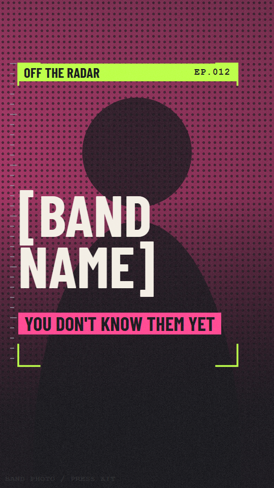
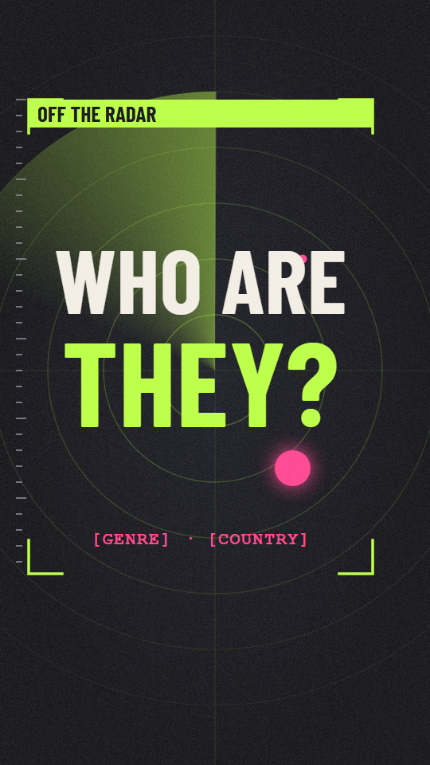
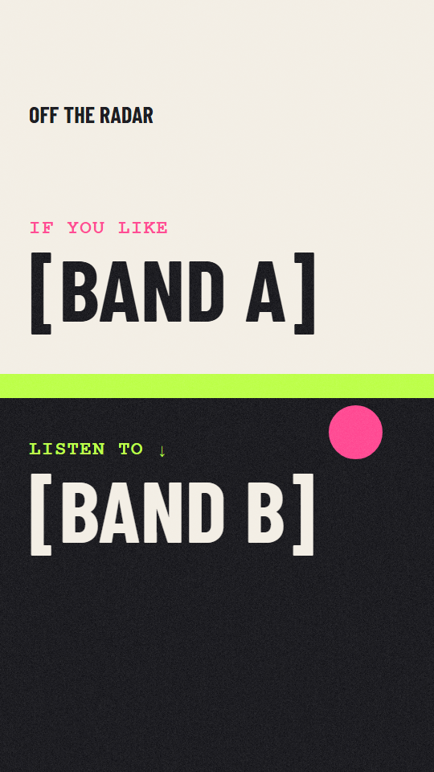
| Template | Use when | Elements |
|---|---|---|
| A · Poster | You have a good, cleared band photo. | Duotone photo + band name (≈ 230 px) + magenta tag "you don't know them yet" + header bar. |
| B · Radar scan | No photo, or hook is a question. | Radar sweep + 2-line question + blip. Fully typographic and photo-free: zero image-rights risk. |
| C · If you like | The comparison is the selling point. | Split light/dark: "If you like [A]" over "Listen to [B]". Bone Paper top. |
Rules
- Max 4 words of large text, 6 total.
- Keep key content inside the centre 1080×1440 (Instagram 3:4 grid crop) and the safe area.
- Same header bar and brackets in every cover: consistency in the grid.
- Alternate A/B/C across the grid so it doesn't look repetitive; test A vs. B for 2 weeks.
- Text contrast ≥ 4.5:1; bone or lime on dark only.
- Only photos you are cleared to use. Otherwise template B.
- Honest covers: no fake claims or misleading imagery (YouTube's misleading-metadata policy).
- Export PNG, 1080×1920, under 2 MB.
Avoiding strikes, Content ID and other filters
Claim vs. strike vs. takedown
| What | Who triggers it | Consequence | Severity |
|---|---|---|---|
| Content ID claim (YouTube) | Automatic match against rights-holder reference files | No strike. Revenue goes to the claimant, the audio may be muted or the video blocked in some countries. On Shorts the claim usually results in the music being tracked/monetised by the owner, or blocked if the owner doesn't allow it. | Medium |
| Copyright takedown / strike | A person or label files a legal takedown request (DMCA or local equivalent) | Video removed + copyright strike. 3 active strikes → channel termination. | High |
| Meta Rights Manager (Instagram/Facebook) | Automatic match or manual report | Audio muted, video removed or blocked, reach limited; repeat infringers risk restrictions or account disablement. | High |
| Community / policy strike | Platform review | Reused/inauthentic content, spam, misleading metadata, etc.: demonetisation, limited reach, strikes. | Medium |
Music sourcing ladder (from safest)
| # | Source | Safety | How to do it right |
|---|---|---|---|
| 1 | Written permission from the rights holders (band + label/distributor/publisher if they exist) | Best | Use Permission_Request_EN.txt. Ask explicitly for YouTube and Instagram, 30–45 s of the track, with credit. Ask them to allow-list your channel/account with their distributor (YouTube Content ID) and Meta Rights Manager so no automatic claim fires. Save the email. They gain free promotion, so many bands say yes. |
| 2 | Creative Commons music from bands who chose it (e.g. CC BY, CC BY-SA) | Good | Avoid NC (non-commercial) and ND (no derivatives; adding music to video counts as a derivative). Give the credit the licence requires. Keep a screenshot of the licence page: CC tracks are sometimes registered in Content ID by mistake and you'll need proof. |
| 3 | Licensed library / subscription | Good | Perfect for stingers, intro/outro and the Rewind format. It can't be the featured band, so it doesn't replace #1. Check that the licence covers YouTube and Instagram, and that channel whitelisting is included. |
| 4 | In-app music libraries (YouTube Shorts sounds, Instagram audio) | Platform-only | Licensed for use inside that app only, can't be exported, so it breaks the "same file on both" rule: you'd export the video silent and add audio in each app. Most unknown bands won't be in the catalogue. Business Instagram accounts have a narrower library. |
| 5 | Ripping from Spotify/YouTube/Bandcamp without permission, "no copyright intended" notes, "fair use" bets, covers/re-recordings, lyrics | Avoid | Disclaimers have no legal effect; 30–40 s of a recording used as the main attraction isn't a safe fair-use bet; covers need composition licences. Don't. |
Images, fonts and other assets
- Band photos, logos and artwork: use official press-kit images and ask for permission in the same email. Credit the photographer if the band asks.
- Concert footage: usually belongs to the filmer and contains the music. Use only the band's own footage or your own.
- Screenshots of Spotify/Bandcamp/Instagram pages or album covers: avoid. Use plain text "Bandcamp / Spotify" instead of logos.
- Stock footage, SFX, fonts, CapCut library effects/music: check the commercial-use licence of each; CapCut marks some items as commercial-use friendly, others not.
- AI-generated visuals: don't create realistic fake band members or performances. If you use realistic synthetic content, follow the platforms' disclosure/labelling rules.
- Facts: misinformation or defamatory claims about real people cause reports. Source every fact.
Other filters that can hurt the series
- YouTube "inauthentic / mass-produced content": repetitive, templated videos without original value may lose monetisation eligibility. Keep real curation and commentary in every episode.
- Instagram originality: reposted content and visible third-party watermarks get less distribution. Export clean files.
- Spam & metadata: don't stuff hashtags (3–5), don't use misleading titles or covers, don't mass-tag accounts.
- Duplicate uploads: posting the same file on both platforms is fine; posting it repeatedly on one is not.
Pre-publish compliance checklist
- Written permission from the band/label for audio and images, for YouTube and Instagram (saved in the Episode Sheet).
- Channel/account allow-listed with the distributor, or permission states they won't claim.
- Only the part of the track agreed is used (≤ 45 s). Credit in caption/description.
- No lyrics, no streaming logos, no screenshots, no third-party footage.
- Every on-screen fact verified, source stored.
- First export reviewed on a phone with no watermark or CapCut outro.
- Posted as Private/Unlisted first: check that no Content ID claim appears in YouTube Studio's Content tab before publishing publicly. Meta shows rights issues in Rights Manager or the Reel's status.
If a claim or strike arrives anyway
- Read the exact type (Content ID claim vs. takedown). Don't panic-delete: deleting a video does not remove a strike.
- If you have permission, send the evidence to the claimant. Only dispute when you are right: false disputes can escalate into takedown requests and strikes.
- If you don't have rights, remove or replace the audio, or delete the video (before a strike where possible).
- Strike: take the copyright school, don't repost the content; a claimant can retract the takedown, which removes the strike.
- Log what happened and fix the process that allowed it.
Pitfalls & mitigation
| Pitfall | Why it happens | Mitigation |
|---|---|---|
| Music claims or strikes | Using commercial or unlicensed tracks, even for 15 s. | Permission-first workflow, allow-listing, rights log, unlisted pre-check (section 08). |
| "Same video" ≠ same audio | In-app music can't be exported; trending audio only works in-app. | Accept the trade-off: cleared music baked in the file, no trending sounds. Optionally publish a 2nd, in-app version for trend ride-alongs. |
| Text hidden by UI | Different overlays on YouTube and Instagram. | Template brackets = safe area. Test a private upload on both apps. |
| Unknown bands have no search demand | Nobody searches for a name they don't know. | Use "If you like [A]" in titles/captions, genre + country keywords, collab posts with the band. |
| Weak first 2 seconds | Text-only: the hook must be visual and typographic. | Hook bank, A/B test two hook styles, start music on an energetic bar. |
| Looks like a clone factory | Same template every time + automation. | 3-of-5 variation rule, genuine commentary, vary accent/background/structure. |
| Text too fast / too small | No voice to carry information. | 7 words max, 3 words/s, 30 px+ labels, test with sound off. |
| Name or handle conflict | Generic names already used. | Check handles/trademark before branding; secure the same handle on all platforms. |
| Burn-out / cadence | Weekly is hard for solo creators. | Batch 4 episodes; keep a 2-episode buffer; scale only with data. |
| Band backlash | Wrong facts or unapproved use of material. | Ask for approval of the final cut; tag and credit the band. |
| Wrong platform assumptions | Limits and features change often. | Re-check lengths, library access and policies each quarter. |